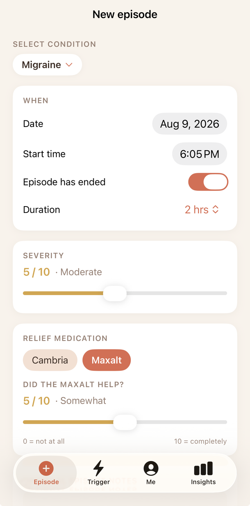
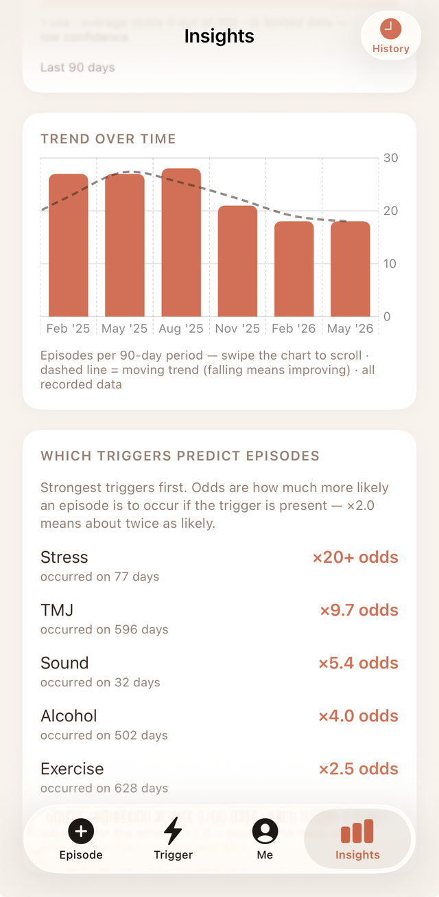
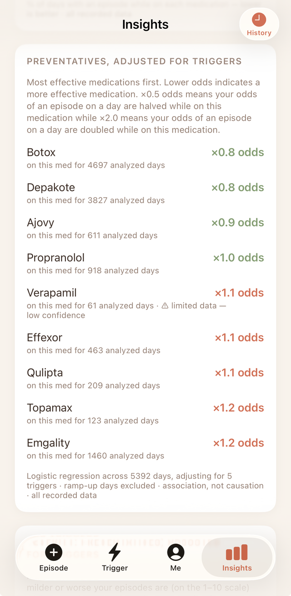
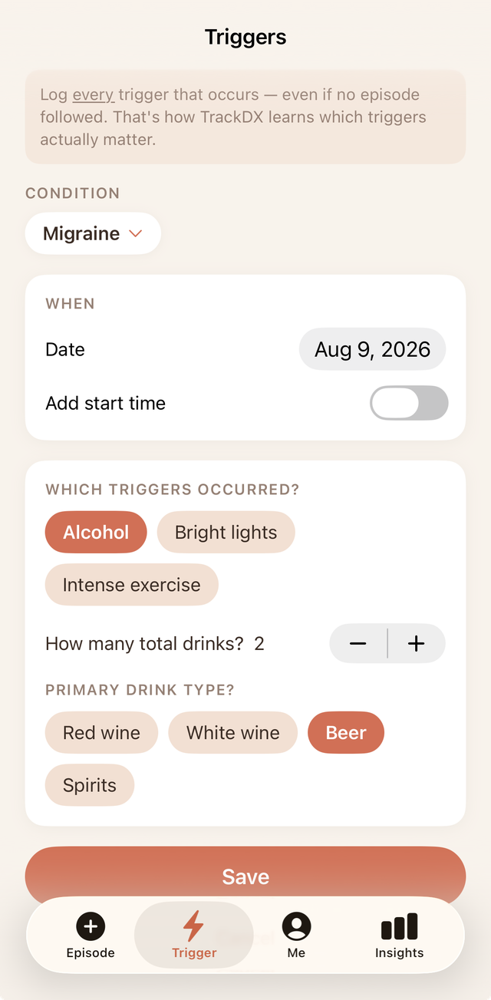

For multiple conditions. For every pattern that matters.
Your condition doesn't fit in a box. Your tracker shouldn't either.
TrackDX is the symptom tracker built for conditions that come and go in attacks — and for the ones you live with every day. Migraines, sciatica, IBS, eczema, food allergies, and more. Log episodes, triggers, and medications in seconds, and let TrackDX find the patterns you'd never spot on your own.
TrackDX is a personal tracking tool, not a medical device or diagnostic tool. It doesn't diagnose anything — it helps you and your doctor see the patterns already in your data.


Built for multiple conditions — not just one
Most tracking apps pick a single condition and stop there. TrackDX allows you to track as many medical conditions as you need, each with its own triggers and medications, all in one place.
Episodes or daily severity — whichever fits your condition
Not every condition behaves the same way, so TrackDX doesn't make them share one format. When you add a condition you choose how it's tracked, and the whole app — logging, history, and insights — adapts to match.
Episodes
For conditions that come and go in discrete attacks — migraine, IBS flares, asthma attacks, seizures. Log when it started, how long it lasted, how intense it was, what you took, and whether it helped. Quiet days are recorded too, because gaps are data.
Daily severity
For conditions that are present most days and vary in degree — sciatica, fibromyalgia, eczema, TMJ. Rate severity once a day, broken out by up to six body locations, so you can see which spots are improving and which aren't.
Not sure which to pick? TrackDX suggests one for each condition it knows and explains why — but the choice is always yours, and you can change it later.


Four things. Logged consistently, they explain almost everything.
TrackDX is built around the four pieces of information that actually drive good management decisions.
Episodes or daily severity
Log the date, start time, duration, intensity (1–10), the relief medication you used, whether it helped, and your suspected cause — in well under a minute. Tracking a daily condition instead? Rate severity by body location once a day.
Triggers
Log triggers any day — even when nothing happens. Negative data is what turns a hunch into a real hit-rate.
Preventative medications
Track every medication and every period you were on it, so TrackDX can tell you whether it's actually changing your episode frequency or severity.
Relief medications
Record what you took to feel better and whether it worked — so you know what to reach for next time.
Insights that go beyond a log book
Anyone can keep a diary. TrackDX turns yours into statistics: episode frequency over time, which preventative medications are helping the most, which triggers are the most impactful, and relief medication efficacy — all with advanced statistical models that give you the true picture.
Basic stats are free. Trend analysis, trigger and medication regressions, and the physician summary unlock with a one-time $1.99 upgrade — no subscription, ever.

Know which medication is actually helping
Medication management can be challenging. You're taking multiple medications and you don't know which one is helping. TrackDX sifts through the data and lets you know — ranking each preventative by its real effect on your episodes, adjusted for your triggers, so you're never left guessing.
For you
Stop trying to remember whether last month was better or worse than this one. See it. Know which medication is actually helping before you and your doctor decide to change anything. Walk into appointments with answers instead of "I'm not sure if my meds are helping."
For your doctor
Export a clean, one-page physician summary — episode frequency, severity trends, trigger odds ratios, and medication efficacy, all statistically adjusted — so the conversation starts with data instead of a guess.
A quick look inside
From logging to insights, TrackDX provides you instant answers.

Your data stays yours
Everything you log in TrackDX is stored only on your device. Nothing is uploaded to a server, sold, or shared with third parties. Data leaves your device only when you choose to export it yourself — as a spreadsheet you control, or a physician summary you decide to share. Delete the app, and your data is gone.
Not a diagnosis. A clearer picture.
TrackDX is a personal tracking tool, not a medical device. The insights are statistics based on what you log — they are not medical advice, a diagnosis, or a treatment recommendation. Always consult a qualified healthcare professional about your condition and before starting, stopping, or changing any medication. If you are experiencing a medical emergency, call your local emergency number.
Get TrackDX
TrackDX is currently in development and not yet available on the App Store or Google Play. When it launches, it'll be free to download with basic stats included — advanced insights unlock for a one-time $1.99, no subscription. Store badges will go live here as soon as it's available — check back soon.
Want to know the moment it's live? Email us and we'll let you know.